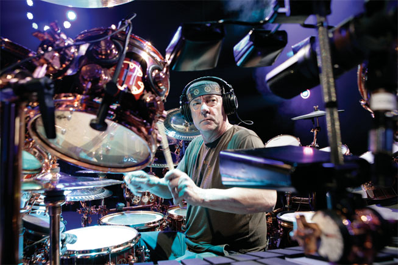

Back to the main site...
Rush Forever!
Geddy, Neil and Alex - The Best Band Ever!
RIP Neil Peart :( - You were only immortal for a limited time

Contents
Goofy Rush Videos!
This video is amazing! Rush are experimenting with the green-screen technology, which was new at the time, to create a baffling and charming visual vortex where the band are flying around extremely unconvincingly. It's nonsense and I love it!
Album Reviews
I'm going to review all 20 Rush studio albums eventually - watch this space! If you want to tell me which album
I should review next, drop me an email! bobby[at]bogoblin[dot]com
- Rush (1974)
- Fly By Night (1975)
- Caress of Steel (1975)
- 2112 (1976)
- A Farewell to Kings (1977)
- Hemispheres (1978)
- Permanent Waves (1980)
- Moving Pictures (1981)
- Signals (1982)
- Grace Under Pressure (1984)
- Power Windows (1985)
- Hold Your Fire (1987)
- Presto (1989)
- Roll the Bones (1991)
- Counterparts (1993)
- Test for Echo (1996)
- Vapor Trails (2001)
- Feedback (2004)
- Snakes & Arrows (2007)
- Clockwork Angels (2012)
My Rush Vinyl Collection
I have some of their records but not all of them! I think it's wonderful to have vinyl records because
the art is so much bigger, and there are liner notes and lots of pictures. I also love having Neil Peart's great
lyrics in print so I can read them while listening to the album. I will buy any Rush vinyl I see when I go shopping
for records.
Bands I like that are like Rush
- Dream Theatre - they are a heavy-metal band but they are also prog, and very inspired by Rush. If you like Rush then you might like their Album 'Images and Words'. I particularly like the song 'Take The Time'
- Queen - you know Queen! But they are great, and have lots of great songs.